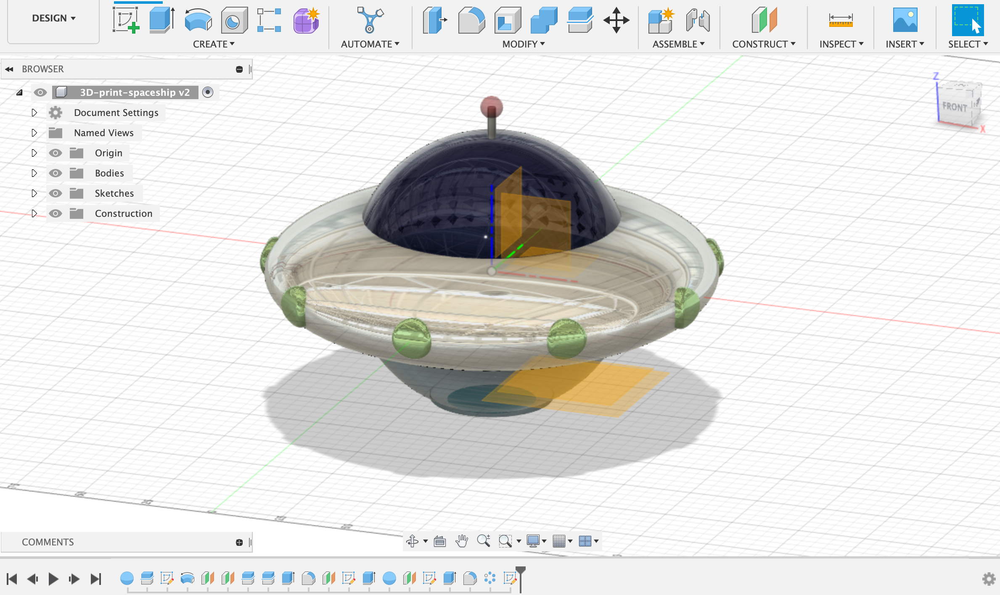
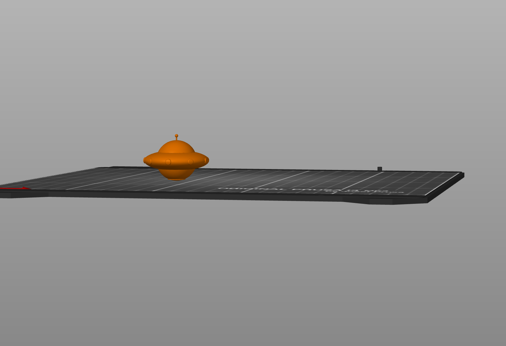
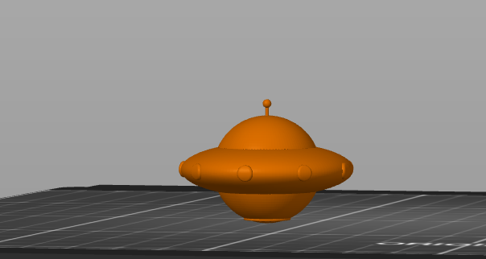
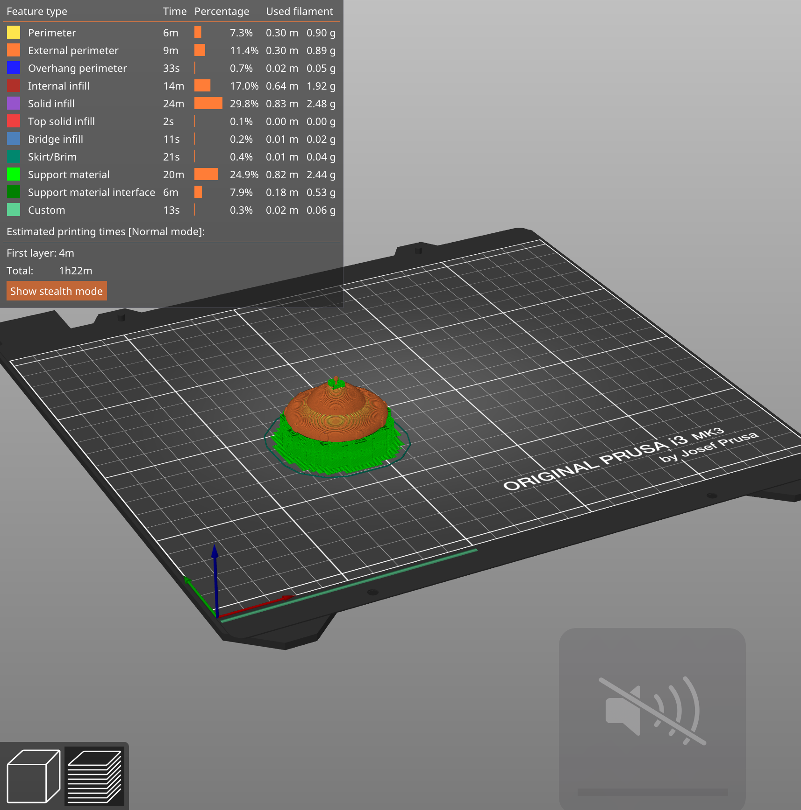
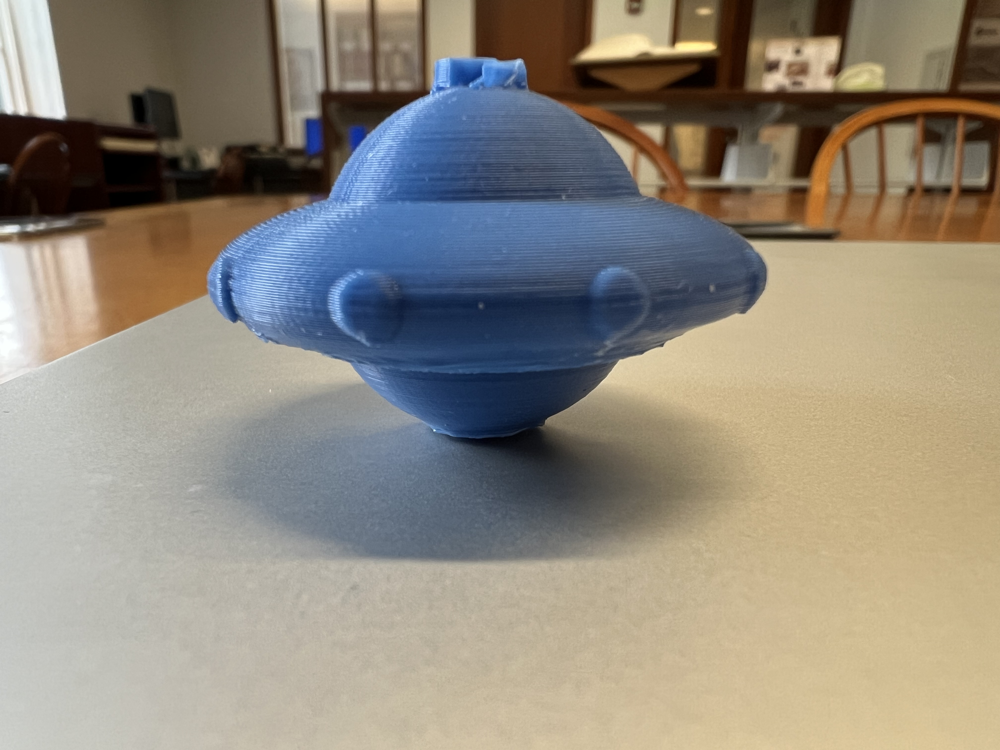

<br>
#### <h1>Week 5: 3D design & printing </h1>
<br>
//////////////Part 1 3D printing//////////// <br>
<br>
Step 1: Fusion sketch <br>
I followed a youtube tutorial and designed a spaceship.
<br>

<br>
Step 2: export to PrusaSlicer for 3D printing <br>
<br>
I first exported the model as a dtl file and then used PrusaSlicer to generate a G-code file.
Because the origial model size was too big for a short print, so I had to downsize the model in PrusaSlicer to make it more manageble.
The estimated printing time was about 50min.
<br>

<br>
Step 3: First 3D print
<br>
 <br>
<br> I quickly learned that the contact area between the model and the printing platform has to be flat so that the printing mateiral can stick on the platform.
So I readjust the design by adding a flat base, and also changed the setting in PrusaSlice to add a supportive base.
Step 4: reprint <br> <br>

<br>
Step 5: The final result <br> <br>
with the base support<br>
<img src="with-base.jpeg" style="width:480px;height:320px;">
without the base<br>

<br>
//////////////Part 2 Photogrammetry scan //////////// <br>
<br>
I used a mobeil app called Polycam to scan a trash can.
here is the video demo:
<br>
<br>
<video width="640" height="480" controls>
<source src="scan-video.mp4" type="video/mp4">
<br>
<P>
<br>
</P>
Back to [Home](../index.html)